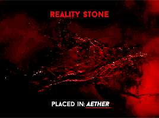

Камни реальности
 Камни реальности
единственный камень который был в текучем виде. Он позволяет своему
владельцу осуществлять любые желания, даже если эти желания противоречат научным законам. Если неосторожно
его использовать, камень может привести к бедствию. Затрагивая границу реальности, он вызывает
катастрофические повреждения, к оторые могут быть изолированы только силой Камня пространства, Камня души и
Камня силы.
Камни реальности
единственный камень который был в текучем виде. Он позволяет своему
владельцу осуществлять любые желания, даже если эти желания противоречат научным законам. Если неосторожно
его использовать, камень может привести к бедствию. Затрагивая границу реальности, он вызывает
катастрофические повреждения, к оторые могут быть изолированы только силой Камня пространства, Камня души и
Камня силы.
Камни реальности
 являлся Эфир, представленный в фильме «Тор 2: Царство тьмы». Тысячелетия назад тёмный эльф
Малекит пытался уничтожить мир с его помощью, но был побеждён Бёром. Бёр лишает тёмных эльфов Эфира. В 2013
году Джейн Фостер, случайно попадает в тёмное измерение, и Эфир вселяется в неё. Это пробуждает Малекита, он
нападает на Асгард, куда Тор принёс Джейн в попытке исцелить. После отражения атаки Тор с помощью Локи бежит
вместе с Джейн из Асгарда. Малекиту удаётся заполучить Эфир. В итоге Тор побеждает тёмного эльфа. В конце
фильма Сиф и Вольстагг отдают Эфир на хранение Коллекционеру, потому что в Асгарде находится Тессеракт. В
фильме «Мстители: Война бесконечности» Стражи Галактики летят на Забвение в целях защитить камень, но
попадают под иллюзию, созданную ожидавшим их Таносом, которому нужна была Гамора для того, чтобы найти
Камень души. В фильме «Мстители: Финал» Тор и Ракета отправляются в Асгард 2013 года, и Ракета выкачивает
Эфир из Джейн Фостер.
На Главную